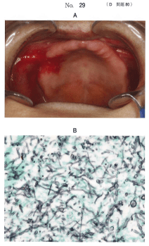

| 病変 | 原因 | 治癒期間 |
|---|---|---|
| 褥瘡性潰瘍 | 床縁・粘膜面の過圧 | 短期的（義歯調整で治癒） |
| 義歯性口内炎 | Candida albicans感染 | 中〜長期的（抗真菌薬治療が必要） |
| 義歯性線維腫 | 床縁部の慢性的刺激 | 長期的（外科的切除が必要） |
| フラビーガム | 顎堤吸収、不適合義歯の長期使用 | 長期的（外科的切除が必要） |
褥瘡性潰瘍のみ。義歯性線維腫、義歯性口内炎、フラビーガムは義歯調整だけでは短期的に治癒しない。
咀嚼障害、嚥下障害、構音障害は義歯の不適合や形態不良が主な原因であり、口腔清掃状態との直接的な関連は少ない。
副腎皮質ステロイド軟膏は真菌感染を増悪させるため禁忌。義歯粘膜面のリリーフは義歯性口内炎の治療としては不適切。
口腔清掃状態の悪い全部床義歯装着者で起こりやすいのはどれか。2つ選べ。
【解説】口腔清掃不良では口臭（デンチャープラーク蓄積）と粘膜の発赤（義歯性口内炎）が起こりやすい。咀嚼・嚥下・構音障害は義歯の形態や適合の問題。
義歯床下粘膜の病的変化で、義歯調整によって短期的に治癒するのはどれか。1つ選べ。
【解説】褥瘡性潰瘍は床縁や粘膜面の過圧が原因で、義歯調整により短期的に治癒する。義歯性線維腫・フラビーガムは外科的切除、義歯性口内炎は抗真菌薬治療が必要。
80歳の女性。口腔内の痛みを主訴として来院した。上下顎全部床義歯は3年前に装着し問題なく使用していたが、最近、上顎顎堤粘膜が痛くなってきたという。全身状態としては栄養失調を認め、やせ型である。義歯の適合に問題は認められなかった。初診時の口腔内写真（別冊No.29A）と粘膜発赤部の塗抹標本の染色像（別冊No.29B）を別に示す。
適切な対応はどれか。3つ選べ。

【解説】塗抹標本でCandida（真菌）が確認された義歯性口内炎。栄養指導、口腔の清掃、抗真菌薬軟膏の塗布が適切。副腎皮質ステロイド軟膏は真菌感染を増悪させるため禁忌。